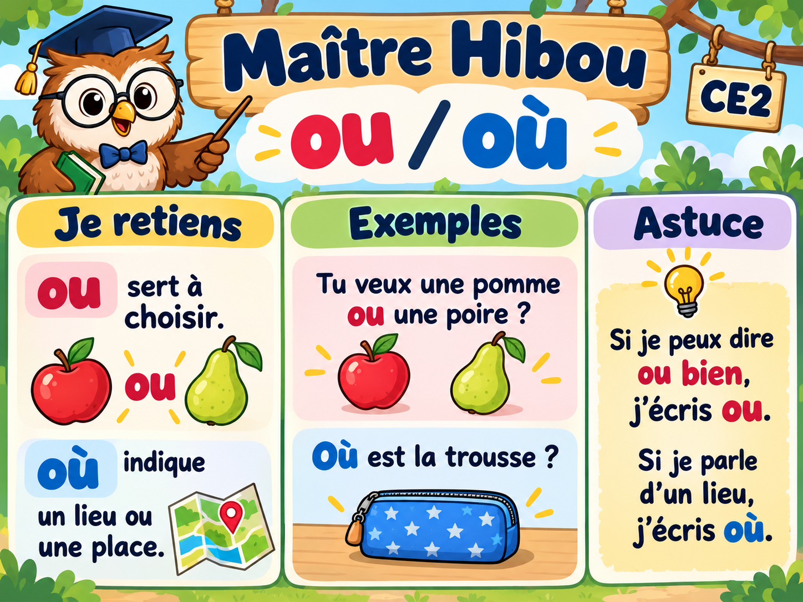

À toi de jouer !
10 questions. Vérifie ta réponse avant de passer à la suivante.
Bravo ! Tu as réussi les 10 questions.
Tu peux maintenant valider ta leçon.
Si je peux dire “ou bien”, j’écris ou. Si je parle d’un lieu, j’écris où.

10 questions. Vérifie ta réponse avant de passer à la suivante.
Tu peux maintenant valider ta leçon.